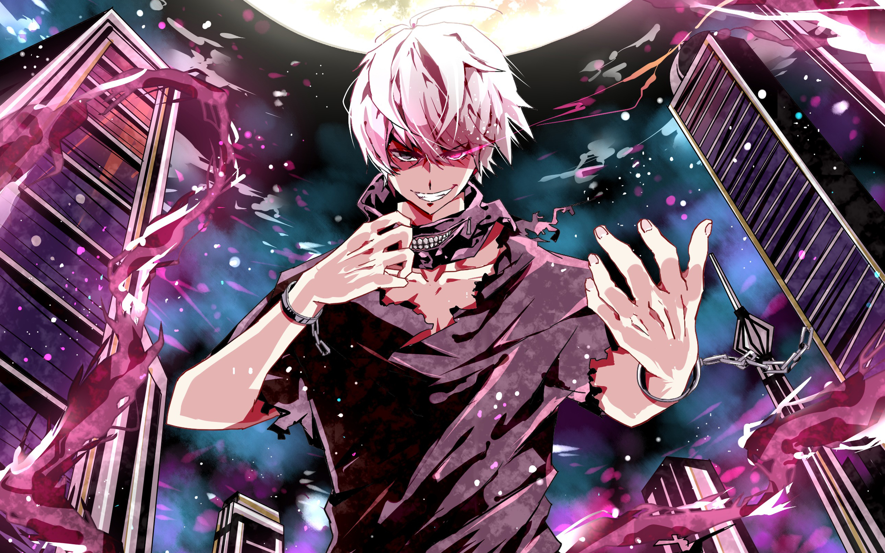

historia del anime
comienza a principios del siglo XX en Japón. Inspirados por la animación occidental, los primeros animadores japoneses como Jun'ichi Kōuchi y Ōten Shimokawa comenzaron a experimentar con técnicas de animación tradicionales. Uno de los primeros cortometrajes conocidos es Namakura Gatana, creado en 1917, una breve historia cómica sobre un samurái torpe, que marca el inicio del anime japonés.

impacto del anime
ha tenido un profundo impacto en la sociedad, no solo en Japón, sino en todo el mundo. Lo que comenzó como una forma de entretenimiento local se ha convertido en una poderosa herramienta cultural con influencia global. A través de sus historias, personajes y estilos visuales únicos, el anime ha logrado conectar con personas de todas las edades y orígenes.
Diversidad de Géneros en el Anime
Uno de los aspectos más destacados del anime es su gran diversidad de géneros, lo que lo convierte en una forma de entretenimiento capaz de atraer a públicos muy distintos. A diferencia de otras animaciones, el anime no está limitado a un solo tipo de historia ni a una única audiencia. Existen animes para niños, adolescentes y adultos, y sus temáticas pueden variar desde el romance más dulce hasta la ciencia ficción más compleja.

Expresión Artística del anime
Más allá de ser solo entretenimiento, el anime también puede considerarse una verdadera forma de arte. A través de su estilo visual único, sus narrativas elaboradas y su riqueza simbólica, el anime logra transmitir emociones profundas y reflexiones sobre la vida, la sociedad y la condición humana.